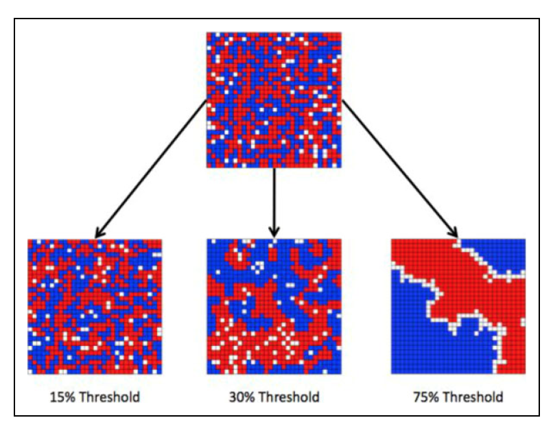
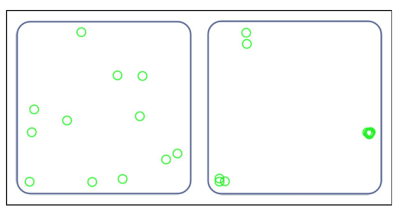
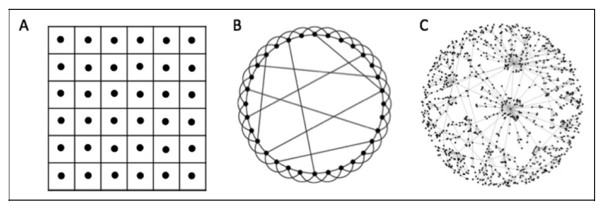
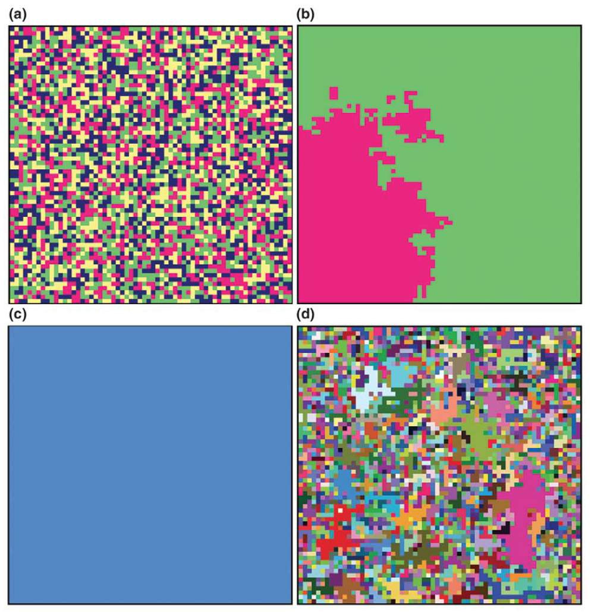
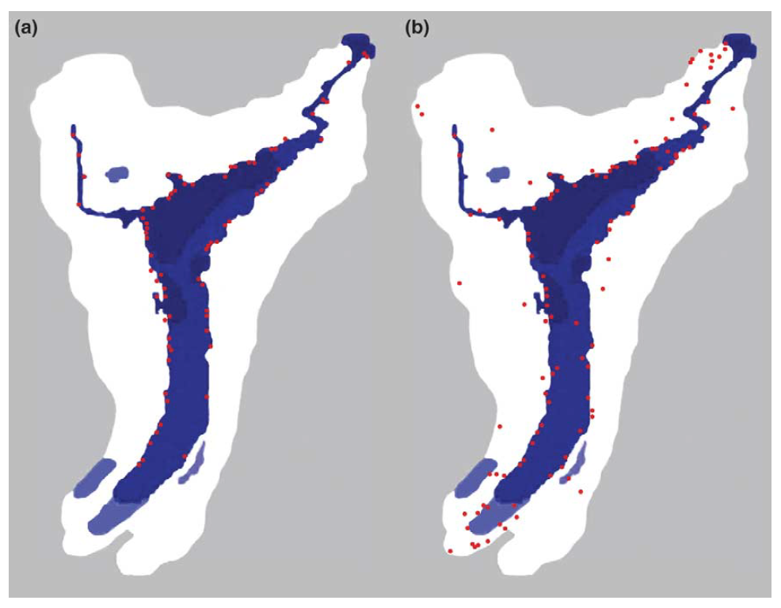

Week 4: Agent-Based Modeling
Week 4: Agent-Based Modeling
-
Jackson, J. C., Rand, D., Lewis, K., Norton, M. I., and Gray,
K. (2017). Agent-based modeling: A guide for social
psychologists. Social Psychological and Personality Science,
8(4), 387–395.
-
Macy, M. W. and Willer, R. (2002). From factors to actors:
computational sociology and agent-based modeling. Annual Review
of Sociology, 28, 143–166.
-
Axelrod, R. and Tesfatsion, L. (2006). A guide for newcomers to
agent-based modeling in the social sciences. In L. Tesfatsion
and K. L. Judd, editors, Handbook of Computational Economics,
volume 2, pages 1647–1659. Elsevier.
-
Ballow, A. L., Chludzinski, L. R., and
Prieto-Langarica, A. (2020). Agent-based modeling in
mathematical biology: a few examples. In H. Callender
Highlander, editor, An Introduction to Undergraduate Research in
Computational and Mathematical Biology, Foundations for
Undergraduate Research in Mathematics, pages 273–298. Springer,
Cham, Switzerland.
example 1: segregation [Jackson et al. (2017)]

Visualization
of Thomas Schelling's (1971) segregation model at
its commencement (top panel) and conclusion (bottom
panels). When agents have a 15% threshold for similarity (left
panel), only minimal segregation occurs. However, 30% (middle
panel) and 75% (right panel) thresholds produce striking
segregation. (Retrieved from
http://nifty.stanford.edu/2014/mccown-schelling-model-segregation/.)
Do people live in homogenous neighborhoods because they are
racist? Schelling (1971) challenged this assumption, asking
whether segregated neighborhoods would form even when
individuals had no prejudice, and only wanted a few
neighbors similar to themselves. Schelling placed red and
green pennies on a chessboard to represent people in
neighborhoods. People were happy—and remained in their
square—if they were surrounded by at least 30% of their
“color”; if this number dropped below 30%, however, people
became unhappy and moved to a new square. Schelling played
out this model by moving pennies one by one until each
person on the board was happy, by which time the board was
highly color segregated.
example 2: group formation [Jackson et al. (2017)]

Visualization of the Gray et al. (2014) model of group formation
displayed at Round 1 (left panel) and Round 300 (right panel).
(Retrieved from online simulation at
http://www.mpmlab.org/groups/).
To escape the chicken-egg dilemma — groups require
identity, but identity requires groups — Gray (2014) examined
whether groups could form in a completely homogeneous
population without any identities. The authors programmed
agents with only two simple characteristics: reciprocity (the
tendency to cooperate with those who have previously
cooperated with you) and transitivity (the tendency to share
your network’s social preferences)— each of which was a
well-established social tendency.
COMPUTATIONAL models of collective behavior [Goldstone & Janssen, 2005]
-
Computational models of human collective behavior offer
promise in providing quantitative and empirically verifiable
accounts of how individual decisions lead to the emergence
of group-level organizations.
-
Agent-based models (ABMs) track
interactions among individual agents and their
environment, and provide a process-oriented alternative to
descriptive MATHEMATICAL models.
-
Recent ABMs provide compelling accounts of group pattern
formation, contagion and cooperation, and can be used to
predict, manipulate and improve upon collective behavior.
-
ABMs overcome an assumption that underlies much of cognitive
science – that the individual is the crucial unit of
cognition. The alternative advocated here is that individuals
participate in collective organizations that they might not
understand or even perceive, and that these organizations
affect and are affected by individual behavior.
why ABMs
|
"People create group-level behaviors that are beyond the
ken of any single person. The
emergence of higher-level
organizations from the interactions of lower-level units
is surprising in the case of group behavior because we are
the lower-level units, and the higher-level organizations
typically emerge spontaneously, without our knowledge.
Social phenomena such as rumors, the emergence of a
standard currency, transport systems, the World Wide Web,
resource harvesting, crowds,
[Conway's Game of Life patterns, like
the one on the right], and scientific establishments
arise because of individuals’ beliefs and goals, but the
eventual form that these phenomena take is rarely dictated
by any individual."
|
|
why ABMs
Agent-Based Models (ABMs) ... build social structures from the
‘bottom-up’, by simulating individuals by virtual agents, and
creating emergent organizations out of the operation of
rules that govern interactions among agents.
ABMs have several attractive features that supplement
traditional methods for exploring group behavior.
-
They are expressed with unambiguous mathematical and
computational formalisms so that once they have been fully
described, their predictions are clear, quantitative and
objective.
-
They provide true bridging explanations that link two distinct
levels of analysis: the properties of individual agents
(e.g. their attributes and interactions), and the emergent
group-level behavior. When successful, agent-based models are
particularly satisfying models because they show how coherent,
group-level structures can spontaneously emerge without
leaders ordering the organization, and sometimes despite
leaders’ effort.
-
Because the models are typically either simple or informed by
real-world data, they are appropriately constrained and cannot
[indiscriminately] fit any conceivable pattern of data. The
self-organization process itself exerts
strong constraints on the kinds of patterns likely to be
observed.
typical characteristics of ABMs
-
Computational description at the level of agents.
ABMs consists of a large number of interacting agents,
operating within an environment. Each agent’s behavior is
governed by rules triggered by their local condition rather
than global information. High-level summary descriptions
emerge from the unfolding agent interactions but they are not
explicitly programmed.
-
Stigmergic interactions.
Agents act on and are influenced by their local
environment.
Stigmergy is a form of indirect
communication between agents that is achieved by agents
modifying their environment and also responding to these
modifications, for example, ants following
pheromone trails left by other ants.
-
Autonomy of agents.
Each agent is capable of autonomous behavior, and possesses
individual, albeit frequently simplified, representations of
beliefs, goals and strategies. Agents typically do not
calculate optimal or rational courses of action, but rather
use
heuristics,
reinforcement learning,
opportunistic adaptation, or cross-generational
evolution to change their strategies.
-
Spatially distributed populations of agents.
ABMs may play out in a 2D or 3D landscape, whose topology /
geometry may vary.
concerning the topology [Jackson et al. (2017)]

-
A lattice network. Agents only interact with their
neighbors (applicable to residential models).
-
A small-world network. Cross-network connections
compliment neighboring connections, so that any two agents
are connected by only a few degrees of separation
(applicable to almost any social network).
-
A scale-free network. Densely connected agents are
more likely to generate new connections compared to sparsely
connected agents (applicable to the Internet and citation
networks).
[Note that Jackson et al. confuse territorial and functional
definitions of "neighbor".]
idealized vs. detailed models
The most fundamental decision an ABM researcher makes is how
detailed their model will be. Many researchers purposefully choose
to create highly idealized models that boil down a collective
phenomenon to its functional essence. Researchers pursuing
idealized models are typically motivated to describe
domain-general mechanisms with a wide sphere of application.
A good example of this strategy is
Robert Axelrod’s Culture Model. The goal of this
model is to explain how beliefs or attitudes converge or
diverge in a population over time. Agents are placed at fixed
locations within a 2D grid, and initially have random trait
values on each of several features. The likelihood of
neighboring agents interacting with one another is proportional
to their similarity across all features. When two agents
interact, one of the trait values of one of the agents is
copied to the other agent, in a process that simulates cultural
imitation or social influence.
Over time, spatial clusters of like-minded agents develop,
although some diversity of opinion is often maintained as
dissimilar agents are unlikely to interact even if they are
neighbors (see next slide). This simple model can explain (i) the
spatial clustering of opinions, (ii)
bandwagon effects, and (iii) the spontaneous
division of a culture into sub-cultures.
example of an idealized model: culture clustering

Four simulations of Axelrod’s Culture Model. Each agent is
represented by a color that represents their entire set of
features (e.g. hobby) and trait values (e.g. chess, badminton,
violin). Agents with identical colors have identical traits.
-
An initial, randomly generated population of agents, each
possessing two traits (TZ2) on each of two features (FZ2).
-
The same population after 4000 generations of interactions in
which neighboring agents copy each others’ traits, with the
probability of interaction proportional to the agents’
similarity. The population is frozen because the red and green
agents have no traits in common and hence will never interact.
-
After 4000 generations, a simulation starting with agents
characterized by two trait values (TZ2) along 15 features
(FZ15). Increasing the number of features increases the
probability of a homogeneous, like-minded population
emerging.
-
When FZ3 and TZ15, the population quickly becomes frozen into
small cliques that have no crossgroup interactions. Increasing
the number of traits per feature decreases the size of
cliques.
example of a detailed model: the Anasazi settlement

Other ABMs are intimately tied to a specific domain because they
include a considerable amount of detail derived from real world
datasets and their goal is answering a specific real-world
question. One such question is, ‘Why did the
Anasazi people of southwestern United States
abandon their homeland around 1350 AD?’
The ABM here incorporates features grounded in historical records:
maize production levels, ground water reserves, the 3D geography
of the Anasazi’s Long House Valley homeland, populations
established from archeological digs, and social trends regarding
childbirth age, the average age of children leaving home, and
food consumption needs, all based upon recent maize-growing
societies of Pueblo Indians descended from the Anasazi.
Simulated (a) and historical (b) patterns of settlement for the
Anasazi in the Long House Valley around AD 1125. Red circles
indicate settlements, and the shade of blue depicts the annual
groundwater level for a location.
idealized vs. detailed models
|
idealized
|
detailed
|
|
Revealing idealized models have been formulated for the
diffusion of innovations, collective action, the transmission
of cultural elements over generations, the development of
social conventions, and language change.
|
By contrast, detailed models hold the promise of making
faithful predictions by being grounded in a case’s particular
data. There are ABMs that effectively incorporate considerable
detail about
university tenure systems, electricity markets in
England, and hunting behavior in eastern
Cameroon.
|
|
The downsides of these idealized models are that without
extensive tailoring, they might not map onto any actual case
study, and they can oversimplify to the point of leaving out
crucial details.
|
The downside of detailed models is that they may be able to
predict too many possible outcomes if they have many
parameters that are insufficiently constrained. If the models
become too detailed, they may become as complex as the modeled
phenomenon itself, and hence serve as poor explanatory aids.
|
ABMs (computational) vs. descriptive (mathematical) models
To create tractable descriptive equations it is often necessary to
make misleading assumptions that fail to capture essential aspects
of natural phenomena. One example is the
Mean Field Approximation, according to which all
individuals in a group are assumed to be in the same location
and experience the same local environment.
ABMs that incorporate space and local variability frequently
produce much more realistic models. For example, giving agents
unique rather than aggregate positions has proven invaluable in
modeling the continued stability of host-pathogen populations, the
genetic diversity in a population, and preserved pockets of
cooperation surrounded by defectors.
More generally, ABMs often provide more satisfying accounts
than purely descriptive approaches because they posit mechanisms
by which aggregate qualities emerge.
three core themes for agent-based models
Three prevalent themes for computational models of
collective behavior:
Patterns and organization. Human trails, traffic jams,
Mexican waves, and panic behavior of
pedestrians. In these models humans are represented as
particles with variation in speeds or position, and without
any requirement of cognition for the agents. These simple
reactive agent-based simulation models have often provided
surprisingly apt accounts of empirically observed behavior.
Contagion. Social contagion is the spread of an entity or
influence between individuals in a population via interactions
between agents. Examples are the spreading of fads, rumors and
riots. Computational approaches to simulate social contagion are
based on thresholds models. Each agent has a threshold that, when
exceeded, leads the agent to adopt an activity.
Cooperation. A social dilemma is a situation where
sub-optimal group outcomes are achieved if all agents do the
action that is optimal for themselves. If self-centered rational
agents do not cooperate in social dilemmas why do we often find
cooperation in actual case studies? The work of Axelrod on the
Prisoner’s Dilemma led to a large
literature on extensions of the original models to include the
addition of space, indirect reciprocity, and more complex
strategies. Most of this work uses simple reactive agents. Some
recent studies focus on more cognitively sophisticated agents
with designs informed by psychological theories, such as
social comparison and
bounded rationality.
opportunities for future ABM work
Modeling large-scale collectives.
"Big
Data" available from on-line news groups, blogs, social
network services, chat groups and topical communities can
effectively be used to explore naturally occurring coalition
formation, idea spread and group evolution.
Computational models as test-beds. Computational models of
collective behavior can explore in advance the possible
consequences of public policy changes. ABMs can be used to address
‘what if ’ scenarios like ‘What is the consequence of the spread
of Covid-19 if policies are implemented to affect
social contacts of potential carriers?’ and ‘What would be the
impact on world demographics if parents can choose the sex of
their child?’ As computational simulations become increasingly
realistic, they will serve as increasingly useful test-beds for
exploring potential consequences of public policies that have
complex,
non-linear dynamics.
Group control through indirect manipulation rather than
explicit rules. Perhaps the most common method of crowd
control is through direct orders or laws. If we wish to direct
pedestrian traffic, for example, we may institute rules or
physical barriers that prohibit certain movements. The cost of
such prohibitions is decreased pedestrian morale and the
perception of excluded possibilities. ABMs suggest an
alternative method of crowd control by changing the structure of
the environment such that certain behaviors are facilitated and
others are indirectly hindered without instituting physical or
abstract barriers.
From factors to actors: computational sociology and agent-based modeling [Macy & Willer, 2002]
Sociologists often model social processes as
interactions among variables. We review an
alternative approach that models social life as interactions
among adaptive agents who influence one another in response
to the influence they receive.
These agent-based models (ABMs) show how simple and predictable
local interactions can generate familiar but enigmatic global
patterns, such as the diffusion of information, emergence of
norms, coordination of conventions, or participation in collective
action. Emergent social patterns can also appear
unexpectedly and then just as dramatically transform or disappear,
as happens in revolutions, market crashes,
fads, and
feeding frenzies.
motivation: the flocking of geese
|
Consider a flock of
geese flying in tight formation. Collectively
they form the image of a giant delta-shaped bird that moves as
purposively as if it were a single organism. Yet the flock has
no "group mind" nor is there a "leader bird" choreographing
the formation. Rather, each bird reacts to the movement of its
immediate neighbors who in turn react to it. The result is the
graceful dancelike movement of the flock whose hypnotic rhythm
is clearly patterned yet also
highly nonlinear.
|
|
boids
If we tried to model the elegance of the flock at the
global* level, the effort would be misleading because
the flock is not governed by a system-wide program. Moreover, the
task would be immensely difficult because of the extreme
complexity of a nonlinear system. Yet the task turns out to be
remarkably easy if instead we model the flock as the aggregation
of local interactions.
This was demonstrated by
Craig Reynolds (1987) when he modeled the
movement of a population of artificial
"boids" based on three simple rules:
- Separation: Don’t get too close to any object,
including other boids.
-
Alignment: Try to match the speed and direction of
nearby boids.
-
Cohesion: Head for the perceived center of mass of the
boids in your immediate neighborhood.
Had Reynolds chosen instead to write a top-down program for the
global behavior of the flock, he might still be working on it.
Note that Reynolds did not model the flock, nor did he model
isolated birds. He modeled their interaction, at the
relational level.
*
"Global" refers to population-level dynamics that
determine the macro behavior of the flock, while "local" refers to
micro processes at the level of individuals interacting with
neighbors.
ABMs and sociology
Agent-based models (ABMs) of human social interaction are based on
this same theory-building strategy. Sociologists have
traditionally understood social life as a
hierarchical system of institutions and norms that
shape individual behavior from the top down. Interest in ABMs
reflects growing interest in the possibility that human groups,
like flocks of birds, may be highly complex, nonlinear,
path-dependent, and
self-organizing. We may be able to understand these
dynamics much better by trying to model them, not at the global
level but instead
as emergent properties of local interaction among
adaptive agents who influence one another in response to the
influence they receive.
Although sociology has lagged behind other social sciences in
appreciating this new methodology, a distinctive sociological
contribution is evident in the papers we review. First,
theoretical interest focuses on dynamic social networks that shape
and are shaped by agent interaction. Second, ABMs are used
to perform virtual experiments that test macrosociological
theories by manipulating structural factors such as network
topology, social stratification, or spatial mobility.
ABM simulation in sociology
The third wave in social simulation, agent-based modeling,
coincided with the advent of the personal computer in the
1980s. Like microsimulation, these bottom-up models explored the
microfoundations of global patterns. The difference is that,
unlike the socially isolated actors in microanalytical simulation,
the agents now interact interdependently.
ABMs impose four key assumptions:
-
Agents are autonomous. Systemic patterns emerge
from the bottom up, coordinated not by centralized authorities
or institutions (although these may exist as environmental
constraints) but by local interactions among autonomous
decision-makers. This process is known as
"self-organization".
-
Agents are interdependent. Interdependence may involve
processes like persuasion, sanctioning, and imitation, in
which agents influence others in response to the influence
that they receive. Interdependence may also be indirect, as
when agents’ behaviors change some aspect of the
environment, which in turn affects the behavior of other
agents, such that the consequences of each agent’s
decisions depend in part on the choices of others.
ABM simulation in sociology (cont.)
-
Agents follow simple rules. Global complexity does not
necessarily reflect the cognitive complexity of
individuals. Although the rules [that guide individual behavior]
may be quite simple, they can produce global patterns that may
not be at all obvious and are very difficult to understand (like
Reynolds’ "boids"). ABMs explore the simplest set of
behavioral assumptions required to generate a macro pattern of
explanatory interest.
-
Agents are adaptive and backward-looking. When
interdependent agents are also adaptive, their interaction can
generate a
"complex adaptive system". Agents adapt by
moving, imitating, replicating, or learning, but not by
calculating the most efficient action. They can adapt at
two levels, the individual and the population. Individuals
learn through processes
like reinforcement,
Bayesian updating, or the
back-propagation of error in artificial
neural networks. Learning alters the probability
distribution of behaviors competing for attention within
each individual. Populations learn through evolutionary
processes of selection, imitation, and social
influence. Evolution alters the frequency distribution of
agent-types competing for reproduction within a population.
from prediction to explanation
Unlike earlier approaches to computer simulation, whose value
depends largely on predictive accuracy, agent-based models are much
more concerned with theoretical development and explanation
than with prediction.
The power of emergence:
The macrosocial outcome is also more than the sum of its
parts. This concept, known as emergence, was anticipated by
Durkheim (1901): "The hardness of
bronze lies neither in the
copper, nor the
tin,
nor in the lead which have been used to form it, which are
all soft or malleable bodies. The hardness arises from the
mixing of them".
"[Social] facts reside in the society itself that produces
them and not in its parts — namely, its members."
Without a model of the microfoundations of emergent properties,
path-dependent self-organizing processes (such as informal
social control) are likely to be mistaken for institutions that
are globally coordinated (such as bureaucratic controls in
formal organizations).
ABMs defy classification as either micro or macro but instead
provide a theoretical bridge between levels.
two complementary phenomena
Emergent structure. In these models, agents and
agent-behaviors move through social and physical space in response
to social influences and selection pressures. Agents may start out
undifferentiated and then change location or behavior so as to
avoid becoming different or isolated (or in some cases,
overcrowded). Rather than producing homogeneity, however, these
conformist decisions may aggregate to produce
global patterns of
cultural differentiation, stratification, and
homophilous clustering in social networks. Other studies
reverse the process, starting with a heterogeneous population and
ending in convergence: the coordination, diffusion, and sudden
collapse of norms, institutions, beliefs, innovations, standards,
etc.
Emergent social order. These studies show how egoistic
adaptation can lead to successful collective action without either
altruism or global (top-down) imposition of
control. A key finding across numerous studies is that the
viability of trust, cooperation, and collective action depends
decisively on the social embeddedness of interaction.
ABM design questions
- Is interaction global or local, that is, is the population
fully connected or is interaction constrained by the structure
of social ties?
- If interaction is local, are the constraints on tie
formation spatial or social?
- Are ties elective (formed and broken through movement, exit,
or assortative mating) or is interaction forced?
- Is adaptation based on learning (which modifies the
probability distribution of behaviors in each agent’s
repertoire) or evolution (which modifies the frequency
distribution of behaviors across the population of agents)?
- If evolution, does reproduction involve
competition for survival or social influence?
- If influence, is this limited to external states of the agent
(e.g., behavior) or do agents copy other agents’ internal
programming, even though this cannot be directly observed?
- Is influence based on attainment (success, fitness, payoffs,
status) or familiarity (proximity, frequency)?
- Is the model used as an experiment (parameters are
manipulated to test for predicted differences) or a
demonstration (parameters are manipulated to test for
predicted robustness)?
- If used experimentally, are the manipulations mainly of
agent-level parameters (to test a micro theory about the
global implications of behavioral assumptions) or system-level
parameters (to test a macro theory about the dynamical
implications of environmental assumptions)?
social influence and the paradox of mimetic divergence
Three examples of unexpected results:
-
Latane’s (1996) Social Impact Model.
-
Uses a rule to mimic one’s neighbors in a two-dimensional
lattice.
-
From a random start, a population of mimics might
be expected to converge inexorably on a single profile,
leading to the conclusion that cultural diversity is imposed
by factors that counteract the effects of
conformist tendencies.
-
However, the surprising result was that "the system
achieved stable diversity. The minority was able to
survive, contrary to the belief that social influence
inexorably leads to uniformity."
-
Carley’s (1991) and Axelrod’s (1997) models of social influence.
-
These couple local influence (the tendency for people who
interact frequently to become more similar over time) and
homophily (the tendency to interact more frequently with
similar agents). This closes the loop — the more agents
interact, the more similar they become, and the more
similar they become, the more likely they are to interact.
-
More precisely, neighboring agents on a two-dimensional
lattice interact with a likelihood determined by the
similarity of their cultural traits (given by a simple,
randomly assigned string of numbers). Interaction, in
turn, reduces remaining differences.
-
Axelrod expected this self-reinforcing dynamic would lead
inexorably to cultural convergence and
homogeneity. Again the result was surprising. He
found that "local convergence can lead to global
polarization" and that unique subcultures can survive in
the face of a seemingly relentless march toward cultural
conformity. Stable minority subcultures persist because of
the protection of structural holes created by cultural
differences that preclude interaction, thereby insulating
agents from homogenizing tendencies.
-
Kim & Bearman (1997) model of social contagion.
-
Collective action among agents whose interest in the
public good is heavily influenced by social pressure from
other participants in their local network. This causes
interest in the collective action to spread like a
contagion through network channels.
-
It was found that participation spreads most effectively
within densely clustered subnetworks comprising a critical
mass of highly interested primary contributors.
-
The conventional wisdom: social pressure to participate is
needed to overcome the temptation to free ride. It follows
that dependence on the group for social direction promotes
compliance with group obligations. Yet a number of
ethnographic studies of deviant cliques
have shown that conformist pressures can also undermine
normative compliance, leading to badly
suboptimal outcomes for all group members, including the
deviants — surprise!.
-
This led Flache & Macy (1996) to investigate the
possibility that dependence on peer approval can
backfire, leading to collective action failure rather
than success.
in conclusion: some methodological recommendations
-
Start it simple. Analysis of very simple and unrealistic
models can reveal new theoretical ideas that have broad
applicability, beyond the stylized models that produced
them. Pressure to make models more realistic (and agents more
cognitively sophisticated) is misguided if models become so
complex that they are as difficult to interpret as natural
phenomena. ... Models should start out simple and complications
should be added one at a time, making sure that the dynamics are
fully understood before proceeding.
-
Avoid reliance on biological metaphors. Is cultural
evolution the same as genetic? What is the mechanism that
eliminates poor performers from the population and allows others
to propagate? Imitation of the fittest may be more applicable
than starvation and reproduction, but unlike survival of the
fittest, mimetic selection replicates only observed behavior and
does not copy the underlying (unobservable) rules. Biological
metaphors paper over the importance of this distinction. For
example, in repeated
Prisoner’s Dilemma games, it is plausible that an
agent observes and then copies the cooperative behavior of
successful neighbors, but how does the agent know that this
behavior is based on a rule (or supergame strategy) like
Tit for Tat and not
Win-Stay, Lose-Shift or Always Cooperate that
generate identical behavior with cooperative partners?
in conclusion: some methodological recommendations (cont.)
-
Experiment, don’t just explore. Agent-based modeling is
an experimental tool for theoretical research. While important
discoveries can be made by open-ended exploration of theoretical
possibilities, researchers need to resist the temptation to
become freewheeling adventurers in artificial worlds. Careful,
systematic mapping of a parameter space may be less engaging,
but it makes for better science. This requires theoretically
motivated manipulation of parameters, based on careful review of
current theoretical and empirical knowledge, and a clear
statement of the hypotheses that guided the experimental design.
-
Test robustness. Although simulation designs should use
experimental rather than post-hoc statistical controls to
identify underlying causal processes, that does not mean
researchers should avoid statistical analysis of the results.
On the contrary, ABMs, especially those that include stochastic
algorithms, require replications that demonstrate the stability
of the results. Where possible, replications should include
variation in parameters that are theoretically arbitrary or of
secondary interest. Authors then need to be careful to
distinguish between experimental manipulations (where results
are expected to change with the parameters) and robustness tests
(where they are not).
-
Test external validity. Virtual experiments test the
internal validity of a theory, without which
there is no need to test the
external validity. However, this does not mean
there is never such a need. ABMs are often used to grow familiar
macrosocial patterns, as a way to identify possible causal
mechanisms. When this succeeds, researchers need to think about
ways these mechanisms can be operationalized and tested in
laboratory or natural conditions.
in conclusion: some methodological recommendations (cont.)
-
Test domain validity. Do two different models of the same
phenomenon produce the same results? If they do not, find out
why. Identify the assumptions that are the logical source of
divergent implications by carefully aligning the
models.
-
Bring factors back in. The bottom-up approach in ABMs
might seem to imply that these models can only be used to test
microsociological theories. That is a tragic misunderstanding
because it precludes what is most exciting to sociologists about
this methodology. An artificial world populated by computational
agents is a laboratory in which researchers can manipulate
structural conditions to test macrosociological theories without
reifying causal factors at the macro
level. Contrary to the
holistic
epistemology of an earlier generation of
equation-based simulations, changes in population density or
network structure, for example, do not directly lead to the
diffusion of innovations. The causal process is effected through
individual choices. Computational experiments in virtual worlds
provide a rigorous methodology for studying the microfoundations
of macro dynamics. However, the shift from factors to actors
should not limit experimenters to manipulation of agent
attributes (such as cognitive or behavioral
assumptions). Bringing factors back in as experimental
manipulations will realize the full potential of agent-based
modeling, especially in sociology.
mastering ABM
-
A guide for newcomers to agent-based modeling in the social
sciences [Axelrod and Tesfatsion, 2006].
See also:
ABM in social sciences [Axelrod & Tesfatsion]
The social sciences seek to understand not only how individuals
behave but also how the interaction of many individuals leads to
large-scale outcomes. Understanding a political or economic system
requires more than an understanding of the individuals that comprise
the system. It also requires understanding how the individuals
interact with each other, and how the results can be more than the
sum of the parts.
ABM is well suited for this social science objective. It is a
method for studying systems exhibiting the following two
properties:
-
the system is composed of interacting agents; and
-
the system exhibits emergent properties, that is,
properties arising from the interactions of the agents that
cannot be deduced simply by aggregating the properties of the
agents.
When the interaction of the agents is contingent on past
experience (recall the concept of
path / history dependence), and especially when
the agents continually adapt to that experience, mathematical
analysis is typically very limited in its ability to derive the
dynamic consequences. In this case, ABM might be the only
practical method of analysis.
the place of simulation in science
ABM begins with assumptions about agents and their interactions and
then uses computer simulation to generate “histories” that can
reveal the dynamic consequences of these assumptions. Thus, ABM
researchers can investigate how large-scale effects arise from the
micro-processes of interactions among many agents. These agents can
represent people (say consumers, sellers, or voters), but they can
also represent social groupings such as families, firms,
communities, government agencies and nations.
Simulation in general, and ABM in particular, is a third way of
doing science in addition to
deduction and
induction. Scientists use deduction to derive
theorems from assumptions, and induction to find patterns in
empirical data. Simulation, like deduction, starts with a set of
explicit assumptions. But unlike deduction, simulation does not
prove theorems with generality. Instead, simulation generates data
suitable for analysis by induction. Nevertheless, unlike typical
induction, the simulated data come from a rigorously specified set
of assumptions regarding an actual or proposed system of interest
rather than direct measurements of the real world. Consequently,
simulation differs from standard deduction and induction in both
its implementation and its goals. Simulation permits increased
understanding of systems through controlled computational
experiments.
[The authors of this paper left out
abduction, or "reasoning to the best explanation".]
the four goals of ABM
-
Empirical understanding. Why have particular
large-scale regularities evolved and persisted, even when
there is little top-down control? (Examples: standing
ovations, trade networks, socially accepted monies, mutual
cooperation based on reciprocity, and social norms.) ABM
researchers
seek CAUSAL EXPLANATIONS grounded in the repeated
interactions of agents operating in specified
environments. In particular, they ask whether particular
types of observed global regularities can be reliably
generated from particular types of agent-based models.
-
Normative understanding. How can agent-based models
be used as laboratories for the discovery of good designs?
Will designs proposed for social policies, institutions, or
processes result in socially desirable system performance
over time? (Examples: design of auction systems, voting
rules, and law enforcement.) The general approach is like
filling a bucket with water to determine if it leaks. An
agent-based world is constructed that captures the salient
aspects of a social system operating under the design. The
world is then populated with privately motivated agents with
learning capabilities and allowed to develop over time. The
key issue is the extent to which the resulting world
outcomes are efficient, fair, and orderly, despite attempts
by these privately motivated agents to gain individual
advantage through strategic behavior.
the four goals of ABM (cont.)
-
Heuristic. How can greater insight be attained about the
fundamental causal mechanisms in social systems? Even if the
assumptions used to model a social system are simple, the
consequences can be far from obvious if the system is composed
of many interacting agents. The large-scale effects of
interacting agents are often surprising because it can be hard
to anticipate the full consequences of even simple forms of
interaction. For example, one of the earliest and most elegant
agent-based models — the
city segregation (or “tipping”) model developed
by
Thomas Schelling — demonstrates how residential
segregation can emerge from individual choices even when
everyone is fairly tolerant.
-
Methodological advancement. How best to provide ABM
researchers with the methods and tools they need to undertake
the rigorous study of social systems through controlled
computational experiments? ABM researchers are exploring a
variety of ways to address this objective ranging from careful
consideration of methodological principles to the practical
development of programming and visualization tools.
ABMs make possible:
-
the rigorous testing, refinement, and extension of existing
theories that have proved to be difficult to formulate and
evaluate using standard statistical and mathematical tools;
and
-
a deeper understanding of fundamental causal mechanisms in
multi-agent systems whose study is currently separated by
artificial disciplinary boundaries.
questions?